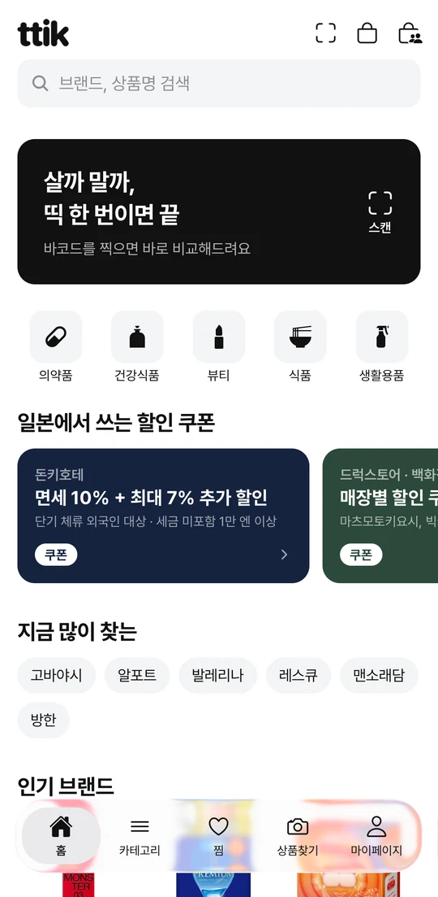
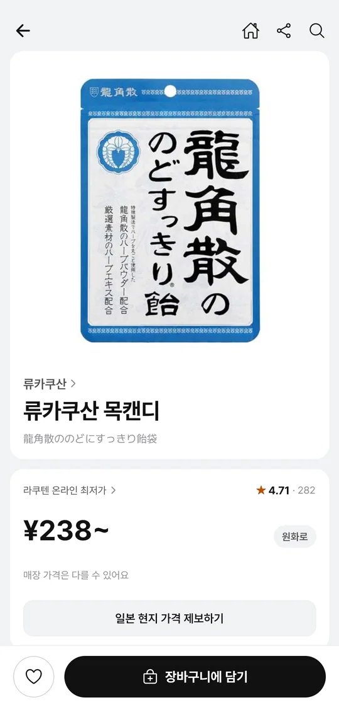
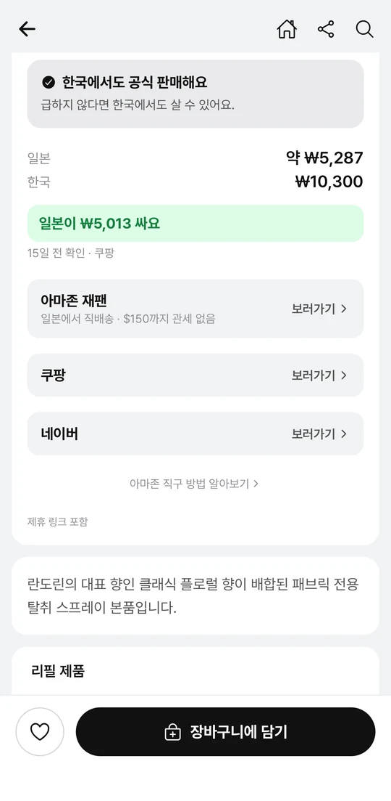
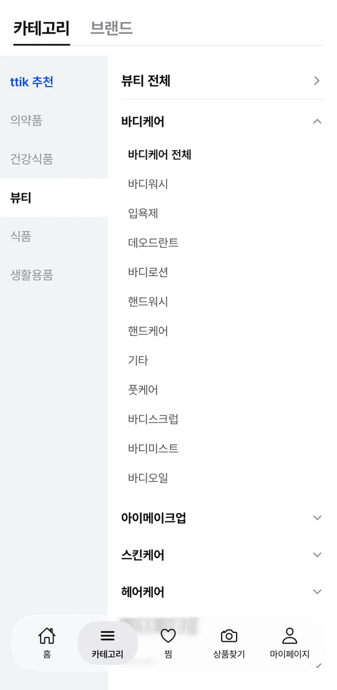

매장에서 바코드를 찍으면 그 상품이 무엇인지, 일본 현지 시세가 얼마인지, 한국에서는 어떤지 한 화면에서 확인해요. 일본어를 몰라도 돼요.
여행을 준비할 때부터 다녀온 뒤까지 써요. 살 것을 미리 담아두고, 매대 앞에서 확인하고, 돌아와 다시 사고 싶을 때 어디서 살지 찾아요.
Google Play는 준비하고 있어요.

무겁게 들고 왔는데,
한국이 더 쌌어요.
캐리어 무게를 재가며 담아 온 것이 집 앞 올리브영에 있을 때가 있어요. 반대로, 한국에서는 못 구하는 것을 그냥 두고 온 적도 있고요. ttik이 매대 앞에서 간편하게 띡 알려줘요.
일본 드럭스토어와 돈키호테에서 파는 상품을 브랜드와 카테고리로 정리해 뒀어요. 살 것을 찜해두고 장바구니에 미리 담아둬요. 한국에서 더 싸게 살 수 있는 것은 미리 걸러낼 수 있어요.
포장의 바코드를 찍으면 한국어 상품명과 일본 현지 최저가가 바로 나와요. 한국에서도 파는 제품인지 알려주니까, 무겁게 들고 오지 않아도 돼요.
써보고 마음에 든 제품을 한국에서 다시 살 때도 그대로 써요. 정식 수입되는지, 직구로만 구할 수 있는지, 어디서 얼마에 파는지 알려줘요.



장바구니를 공유하면 누가 무엇을 담았는지 보이고, 면세 기준 금액까지 얼마나 남았는지도 함께 확인해요.
App Store에서 받을 수 있어요. 제휴 제안이나 문의는 ttikteam@gmail.com로 보내주세요.